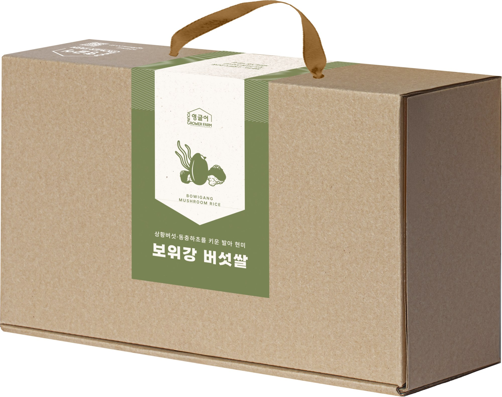

보위강
버섯 재배의 경험을
버섯 재배의 경험을
현미 식품으로 담습니다.
보위강 버섯쌀은 현미를 기반으로 한 버섯 식품입니다. 재배 경험을 일상에서 친숙하게 만나는 식재료로 연결합니다.


식탁에서 만나는 버섯쌀
매일의 식탁에 자연스럽게.
버섯쌀을 취향에 맞는 반찬과 함께 일상 식사로 즐겨보세요. 조리할 때는 선택한 제품의 안내를 따라주세요.

보위강 버섯쌀
현재 제품 구성

버섯쌀 선물박스
선물 구성
- 제품 형태
- 현미 기반 버섯 식품
- 포장 구성
- 개별 제품 및 선물 구성
- 바이어 안내
- 선택한 제품의 현재 중량, 원재료와 조리 방법은 담당자에게 문의해 주세요.